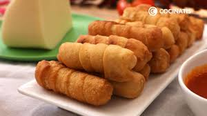
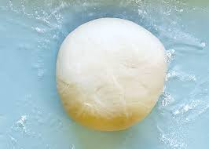
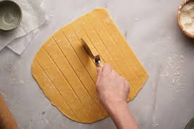
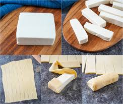
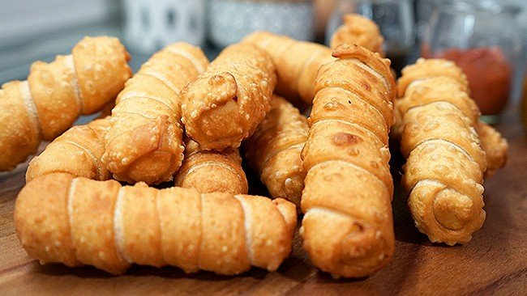

Tequeños
What is a tequeño?
Tequeños are sticks of white cheese wrapped with a homemade crunchy and slightly sweet dough and then fried to
golden perfection.
On this page you'll learn how to cook venezuelan tequeños.

Ingredients
Quantities depend on how many tequeños you want to make.
Tequeños
- Flour
- Salt
- Baking powder
- Water
- Milk
- Sugar
- Fresh white cheese for frying
- Vegetable oil for frying
Pink sauce
- Mayonaisse
- Ketchup
- Lemon juice
- Worcestershire sauce, brandy or rum
- Cayenne pepper
Preparation
- Place the flour, salt, and baking powder into the bowl of a stand mixer with the hook attachment. Mix to
combine.
Add water, vegetable oil, milk, and brown sugar and mix the dough for 5 minutes, or until the dough is
smooth and starts to pull away from the sides of the bowl. Press dough into a disc, wrap tightly in plastic
wrap, and rest in the refrigerator for 30 minutes.

- Unwrap dough and place on a lightly floured surface. Knead with your hands until the dough is very smooth
and elastic, about 2 -3 minutes. Add more flour over the surface, if necessary, and roll out into a 12 x
15-inch rectangle 1/8-inch thick. Using a knife, or a pizza cutter, cut the dough into 1-inch wide strips
lengthwise to end up with 12 strips.

- Cut the cheese block into 6 equal pieces, and then cut each piece in half lengthwise; you end up with 12
cheese sticks.
Take one strip of dough and cover one of the ends of one cheese stick with dough. Continue to wrap dough
around the stick in a spiral fashion, overlapping the edges until you reach the other end. Cover the other
end with dough and pinch edges close to seal fully. The cheese has to be completely covered with dough.
Repeat with remaining cheese sticks.

- Add 2-inches of oil to a skillet. Heat oil to 350°F over medium heat. When the oil is hot, cook the tequeños
in batches, 2 -3 at a time, turning them until all sides are golden brown. Remove tequeños to a plate lined
with paper towels. Let cool for 1 minute, and serve immediately with guasacasa, garlic sauce, and/or spicy
pink sauce.
- Mix with a fork, or wire whisk, all the sauce ingredients until smooth and creamy. If you like a sauce with
more bite, add more cayenne pepper. This sauce will keep in the refrigerator for a couple of weeks.

Enjoy this easy and delicious recipe!

Home